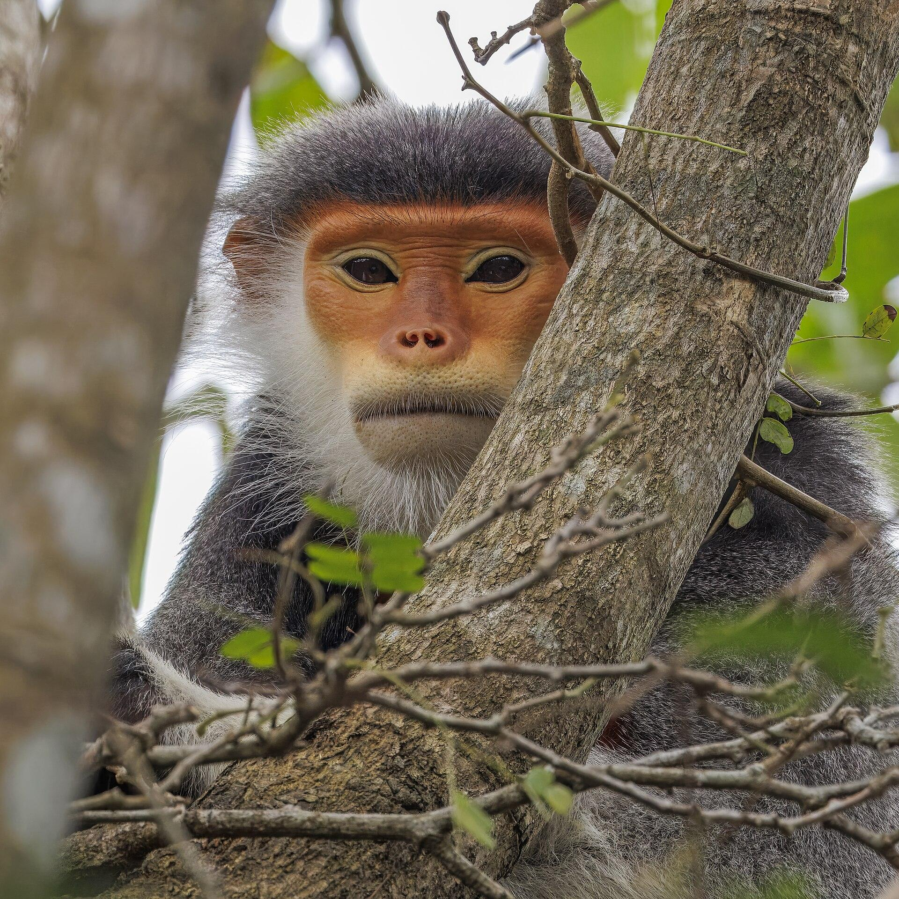

This page plans your route in the browser and needs JavaScript: turn it on in your browser’s settings.
Ta strona układa trasę w przeglądarce i potrzebuje JavaScriptu: włącz go w ustawieniach przeglądarki.
